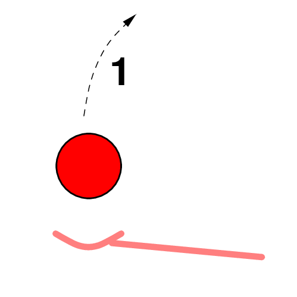
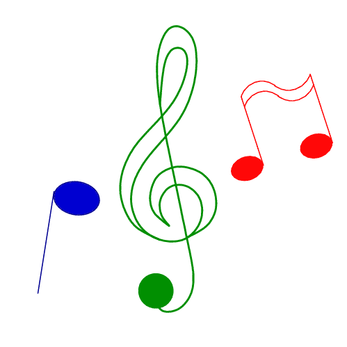
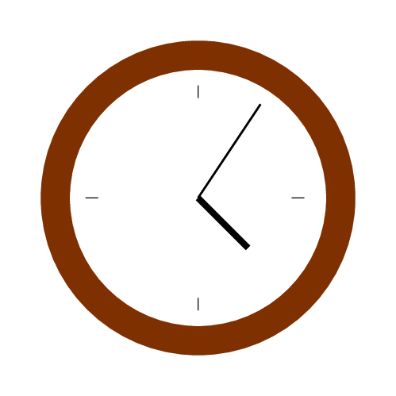
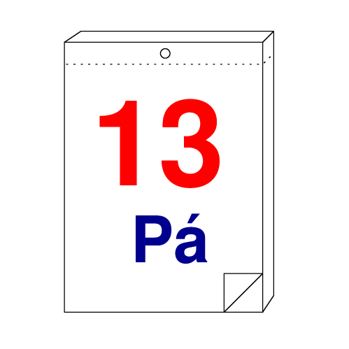
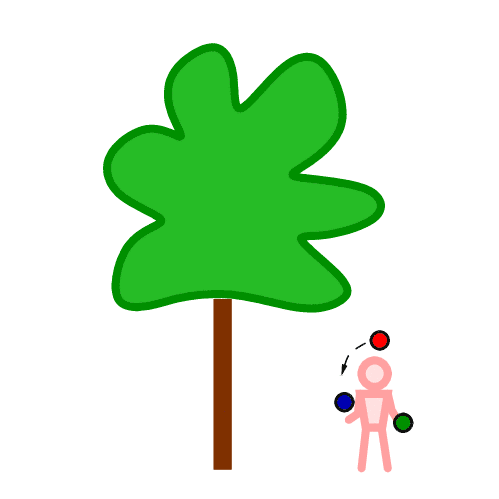
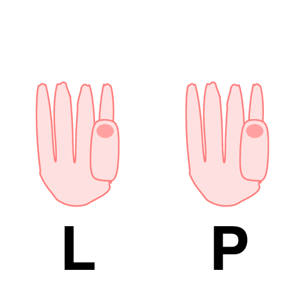
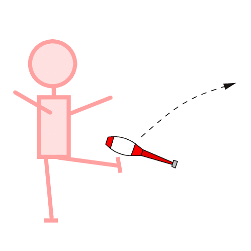

Jste zde: Žonglování » Informace o žonglování » Jak trénovat
Trénink
Žonglovat se nenaučíš nějakým kouzlem nebo protože máš talent, ale tréninkem. Prostě to zkoušíš tak dlouho až se ti to povede.
Rozcvička

Prvním bodem tréninku je rozcvička. Zvolna rozhýbej ruce, ramena, krk, hlavu ... Protáhni si šlachy a přidej i pár náročnějších cviků, aby se ti rozproudila krev. Nástrojem žongléra je jeho tělo a je třeba ho připravit. Rozcvička by mohla trvat asi pět minut, ale není třeba měřit to na stopkách.
Začínáme

Teď už se můžeš pustit do vlastního žonglování. Je dobré začít lehčími triky a postupně přejít až k těm, které se zrovna učíš. Trénink nesmí být nudný nebo stereotypní. Tudy cesta nevede, protože tě to pak nebude bavit. Naopak žonglování je zábava a mělo by přinášet potěšení. Takže střídej různé triky (kaskáda, sprcha, sloupy, ...) a trénuj plynulý přechod z jednoho triku do druhého. Zkus při žonglování stát na jedné noze nebo chodit dopředu/pozpátku.
Hudba

Náladu ti určitě zvedne i nějaká pohodová hudba. Je to lepší než jen samotné bušení míčků do podlahy. Údery dopadajících míčků můžeš omezit tím, že budeš žonglovat nad postelí nebo nad peřinou položenou na zem. Míčky se ti nebudou kutálet pryč a zachováš si dobré vztahy se sousedy.
Jak dlouho?

Délka tréninku je individuální. Dolní hranice je zhruba 10 minut, i s rozcvičkou čtvrt hodinky. Kratší trénink asi nemá cenu. Horní hranici určuje tvoje fyzická zdatnost a tvrdohlavost. Déle než dvě hodiny v kuse vydrží málokdo. To už je lepší rozložit trénink na několik úseků, např. hodina ráno, hodina po obědě a hodina večer. Neměj pocit, že něco zanedbáváš, když netrénuješ 3 hodiny denně, to nedělá nikdo :-)
Jak často?

Nejlepší je trénovat každý den. Když se jednou za týden budeš hodinu trápit s míčky, daleko se nedostaneš. Naopak každodenní čtvrthodinka žonglování je příjemnou relaxací. Zároveň můžeš sledovat, jak se zlepšuješ a postupně zvládáš těžší a těžší triky. Zkus sepsat všechny triky, které umíš do tabulky a změřit jak dlouho který vydržíš žonglovat. Po měsíci měření opakuj a uvidíš, jak postupuješ kupředu.
Kde?

Snaž se trénovat v různou dobu a na různých místech. Získáš tak jistotu v odlišných podmínkách a nevyvede tě z míry třeba protisvětlo, jiné rozestavění nábytku nebo okolní ruch. Občas vezmi do ruky místo svých oblíbených míčků třeba jablka nebo pomeranče. Až se vrátíš zpátky k míčkům, tak zjistíš, že je to s nimi daleko snazší.
Pravá i levá ruka

Když se chceš naučit nový trik, začni svojí šikovnější rukou. Když jsi pravák a chceš zvládnout 2 v 1, začneš nejdřív v pravé ruce. A až poté, co se to naučíš, zkusíš to i v levé. Půjde ti to líp než začínat rovnou pravou i levou. Je důležité trénovat obě ruce tak, aby zvládaly stejné věci, většinou to znamená trénovat víc s nešikovnou rukou.
Krize

Občas může přijít krize, kdy se ti nedaří zvládnout nový trik. Dej si pauzu a trénuj něco jiného, za dva dny se ti určitě povede líp.